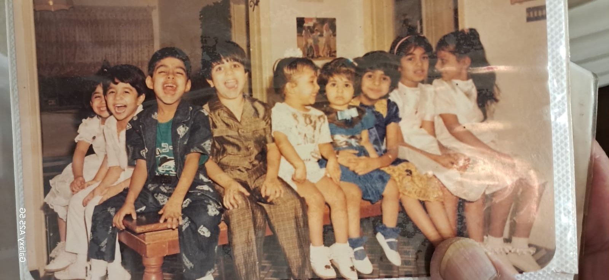

Chapter Two
The Gulf War — When Systems Collapse
Kuwait–Pakistan · 1990–1991
Audio only
The invasion of Kuwait was not an abstraction for my family. It was headlights in the rear-view mirror during a midnight evacuation. It was the discovery that documents you assumed would protect you — residency permits, employment contracts, bank records — become worthless when the issuing authority ceases to exist.
We made it to Pakistan, our passport country but not our home. The irony was sharp: we were citizens of a nation we had barely lived in, arriving as refugees from a country that had never granted us citizenship. The duality deepened. In Kuwait, we were the Pakistanis. In Pakistan, we were the Kuwaitis. We were outsiders everywhere.
Two Years in the Wilderness

Pakistan from 1990 to 1992 was a crucible. We lived as outsiders in our own country, navigating unfamiliar bureaucracies, rebuilding from a financial position that had been wiped clean. My father, who had spent decades building a career in Kuwait, started again. No bitterness. Just work.
I watched him closely during those years, and what I saw was the first version of what I now call the Exile Resilience Framework. He did not waste time mourning what was lost. He stabilized the family first — housing, school enrollment, basic routines. Then he assessed what resources remained. Then he rebuilt, one relationship at a time, one opportunity at a time. Stabilization, assessment, reconstruction, integration. It was systematic, even if he never called it that.
Decades later, writing for TechOman on what the 1990 Kuwait invasion taught me about organizational transformation, I named it explicitly: my father didn't rush to rebuild the business. He secured shelter first. Then income. Then stability for us kids. Only after the foundation was solid did he start thinking about growth. Stabilization before optimization. In Oman we were optimizing an unstable system and calling it innovation. In Lahore I saw the same. The pattern holds across generations and geographies — you cannot install a first-world governance system on a broken human operating system.
The Lessons That Became Frameworks
Crisis, I learned during those years, is not disruption. It is a forced audit. The Gulf War did not create weaknesses in our family's situation — it revealed them. The dependence on a single geography, the assumption of stability, the lack of a contingency architecture. These were vulnerabilities that existed before the first tank crossed the border.
This insight would later become the Crisis as Audit Framework, one of the most powerful tools in my consulting practice. Every organizational crisis I have navigated since then — from sanctions on Huawei to market volatility in the GCC — I approach with the same question: What is this crisis revealing that was already true? The crisis is not the disease. It is the diagnostic.
What I carried out of those two years was not trauma. It was architecture. The architecture of resilience — the understanding that when systems collapse, the first thing you build is not a plan. It is a compass.